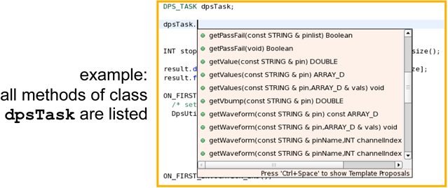
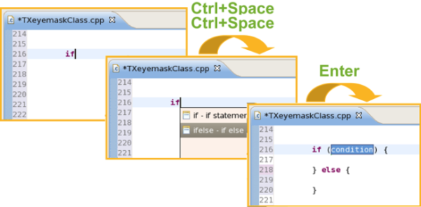
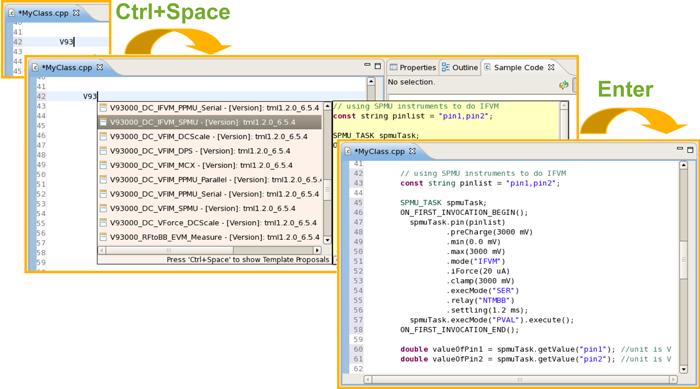
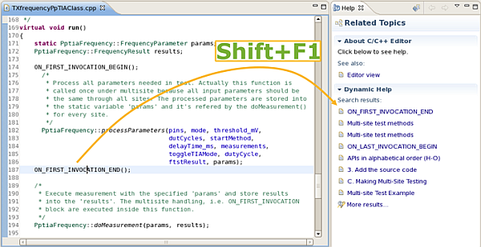

Editing test methods efficiently
For editing tasks in the Test Method editor (C++ editor) SmarTest's content assist provides:
Context sensitive completion list
Start typing and press Ctrl+Space
Context sensitive selection of code snippets
Start typing and press Ctrl+Space twice

Templates for common test tasks
Start typing V93 and press Ctrl+Space

Dynamic help
Where ever you are: Shift+F1 provides context sensitive help:

Functional changes
- Introduced in SmarTest 7.1.3